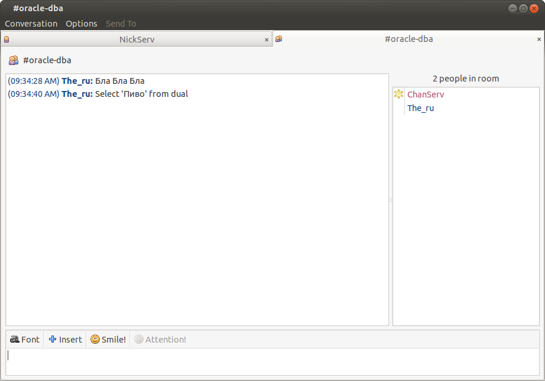

|
Телеграм группа для общения https://t.me/oracledba_net |

|
Loading
Работа над этой версией сайта остановлена. Рекомендуется обратиться к новой версии сайта oracle-dba.ru на котором в дальшейшем будут исправляться все ошибки и
неточности.
IRC (Чат)
Можно подключиться в браузере:
Достаточно просто перейти по ссылке и ввести login и capcha.
Если постоянно использовать чат, то можно и какой-нибудь клиент установить.
В Windows это может быть MIRC (Я его последний рас использовал лет 12 назад, но он и тогда был крут.) [Оказывается он платный!]
Сейчас пользуюсь Linux и использую Pigdig
Server для подключения: irc.freenode.net
Чтобы переключиться на канал. Можно выполнить команду:
/join #oracle-dba
Или с помощью каких-нибудь менюшек. В PigDig это Conversation -> Join Chat и указать #oracle-dba
Не обещаю, что там кто-нибудь будет, но возможность сидеть в чате есть.

Если вам не ответили, это не значит что вас игнорируют. Просто следить за чатом не всегда получается.
Консольний Linux IRC клиент - irssi
В Ubuntu:$ sudo apt-get install irssi
$ irssi
/connect irc.freenode.net
/nick username
/join #oracle-dba
Команды:
http://www.ircbeginner.com/ircinfo/ircc-commands.html